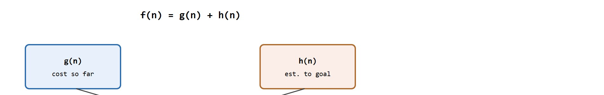
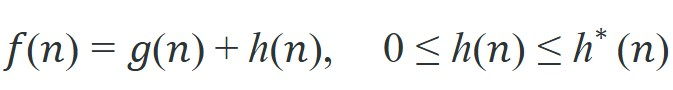

Graph search is a contract between the map discretization and the motion the robot can actually execute.
A Local Planner With Commitment Issues
This section assumes familiarity with the navigation problem framing introduced in section 30.1, particularly the distinction between map representation and motion execution. The graph-search guarantees developed here, especially admissibility and consistency of A*, are extended in section 30.3, where sampling-based planners (RRT, RRT*, PRM) handle continuous configuration spaces that cannot be discretized into grids. The cost-function and heuristic design ideas recur alongside the reinforcement learning reward shaping used for reinforcement-based navigation.
A warehouse robot receives a "go to shelf 47" command. Its map is a grid of 10,000 cells. BFS would blindly fan out in all directions, Dijkstra would respect aisle penalties, but A* reaches the shelf having examined fewer than a tenth of the cells, because a single admissible number (straight-line distance remaining) prunes directions the heuristic already knows point away from the goal before they are ever explored. That pruning is one reason A* or a close variant is typically the default choice for grid and lattice path planning across mobile robotics, from warehouse platforms to delivery drones. Here you will build all three algorithms from scratch, prove the admissibility condition that makes A* optimal, and measure exactly where each algorithm saves or wastes work on real grid maps.
Hand a robot a perfect map and tell it to reach the far corner, and it still cannot move a single wheel. A map says what space exists, not how to cross it. The gap between those two is where every stalled, lost, or circling robot lives. Graph search bridges that gap: it ties a static map representation to a state variable, a cost model, and the next concrete robot action, exactly as Figure 30.2.1 illustrates. A robot has a map, a current position, and a goal. The map is not a path. It represents what space exists; it does not prescribe how to move through it. Graph search converts that static map into an ordered sequence of waypoints the robot can follow. Without this step, the map is inert data.
The three algorithms in this section represent a progression of assumptions about the world. Breadth-first search (BFS) suits maps where all moves cost the same, such as a uniform grid where every step is identical. BFS matters in embodied AI because violating its equal-cost assumption causes silent failures. A robot that treats a steep ramp identically to flat floor will choose paths that are geometrically short but physically dangerous. BFS cannot represent the extra energy or tip-over risk a ramp carries. Mechanically, BFS maintains a queue of nodes to visit. It dequeues the front node, marks it visited, and enqueues all unvisited neighbors at the back. This first-in-first-out discipline explores every node at distance k before it examines any node at distance k+1. That is why BFS returns the fewest-hops path when all edges are equal. Dijkstra's algorithm relaxes that assumption. It finds the cheapest path when edges carry different costs, such as when mud costs more to traverse than pavement. A* adds one more ingredient: an admissible heuristic, an estimate of remaining cost that never overestimates the true remaining cost. This lets the search skip large portions of the map that point in the wrong direction. On a 1,000-by-1,000 warehouse grid, BFS examines roughly 500,000 cells to confirm the shortest path; A* with a Euclidean heuristic examines fewer than 3,000, because a single optimistic number eliminates entire regions before they are touched. Each step in this progression trades a simpler assumption for better real-world applicability.
So far: BFS explores level by level and assumes every move costs the same, Dijkstra drops that assumption to handle real edge costs, and A* adds an admissible heuristic on top of Dijkstra's cost tracking to skip regions that point away from the goal.
A* is correct when the heuristic is admissible, meaning it never overestimates the true remaining cost. Consistency gives an even stronger property: once a node is expanded, its best cost is fixed and will not improve later. Those guarantees matter when the graph stands in for physical space.
Think of admissibility like a sports commentator who is allowed to be optimistic but never delusional. If the remaining race distance is 400 meters, the commentator can say "at least 380 meters to go" (an underestimate, still admissible) but must never say "only 200 meters left" (an overestimate that would cause the algorithm to bet on a shortcut that does not exist). A* uses the heuristic as a tie-breaker: as long as the estimate is optimistic or exact, the algorithm knows it has not yet ruled out the true best path, so it keeps the right door open. The moment the heuristic overestimates, it slams a door that should have stayed open, and the cheapest route disappears from consideration before it is found.
Take a 5-by-5 grid where a warehouse robot travels from cell (0,0) to cell (4,4). BFS fans out in rings, touching up to 25 cells before it finds the goal. Dijkstra with uniform cost does the same work but also handles a variant where the center row costs 3 to cross a slope. A* with a Euclidean heuristic expands roughly 9 cells, skipping the left and bottom edges because the estimate steers it diagonally toward the goal, and Figure 30.2.2 below traces how its priority key is computed. All three return the same path on this open grid; they differ only in cells examined, and therefore in planning time. The frontier, where the frontier is the set of discovered but not-yet-expanded nodes waiting in the priority queue, is what each algorithm's ordering policy actually controls.

A shortest path is only meaningful on a graph that matches the robot body.
Trace A* from start S to goal G. Edges with costs: S-A=1, S-B=4, A-C=2, B-C=1, C-G=3. Heuristic (admissible straight-line estimates to G): h(S)=4, h(A)=4, h(B)=3, h(C)=3, h(G)=0. We track f = g + h and always expand the smallest f.
Step 1. Open set: {S, g=0, f=0+4=4}. Expand S. Neighbors: A with g=1, f=1+4=5; B with g=4, f=4+3=7.
Step 2. Open set: {A f=5, B f=7}. Smallest f is A. Expand A. Neighbor C: g=1+2=3, f=3+3=6.
Step 3. Open set: {C f=6, B f=7}. Smallest f is C. Expand C. Neighbor G: g=3+3=6, f=6+0=6. (Note: reaching C via B would give g=4+1=5, but B has not been expanded yet because its f=7 is higher; the C already on the frontier wins.)
Step 4. Open set: {G f=6, B f=7}. Smallest f is G. Goal reached. Final path S to A to C to G, total cost 6. B (f=7) was never expanded: A* pruned it because its optimistic total already exceeded the eventual solution cost.
The step-through above traced A* by hand on paper; turning that same f = g + h rule into working code is a short, mechanical translation, and Code Fragment 1 later in this section shows exactly that translation, ranking a real frontier list with one line of Python (sorted((n["g"] + n["h"], n["node"]) for n in frontier)). Everything between here and there is the formal vocabulary needed to describe why that one line is correct.
The hand-traced expansion above followed one rule at every step, expand the node with the smallest f, and that single rule is what the formal model now makes precise.
Most navigation methods can be read as constrained search or optimization:

The cost term is graph distance or risk-weighted distance; constraints are traversable cells, obstacle inflation (padding each obstacle's footprint outward on the map by roughly the robot's radius, so a path that is graph-valid is also collision-safe for a robot with physical extent), motion connectivity, and heuristic admissibility.
Code Fragment 1 isolates graph-search invariants: frontier update, predecessor map (where the predecessor map is the lookup table from each visited node back to the node it was reached from, used to reconstruct the final path once the goal is popped), path cost, and heuristic behavior. The point is to verify the path object before handing it to a controller.
# Compute A* priorities for three frontier nodes.
# The admissible heuristic focuses search without changing cost units.
frontier = [
{"node": "A", "g": 4.0, "h": 6.0},
{"node": "B", "g": 7.0, "h": 2.0},
{"node": "C", "g": 5.0, "h": 5.0},
]
ranked = sorted((n["g"] + n["h"], n["node"]) for n in frontier)
print(ranked)
print(f"expand={ranked[0][1]}")Expected output interpretation. The frontier printout shows that node B is expanded first because its combined score $f=g+h$ is smallest, even though it is not the node with the smallest traveled cost alone. Nodes A and C tie at 10.0, which is a useful reminder that tie-breaking policy can still influence search order and runtime even when optimality is unchanged.
When using Python's heapq for A*, add a secondary tie-breaker as the second tuple element, for example (f, node_id), so that equal-priority nodes are always expanded in a deterministic order. Without this, Python will attempt to compare node objects directly and raise a TypeError the moment two f-scores collide. In Nav2, the equivalent parameter is use_final_approach_orientation combined with a consistent cost map resolution; mismatched resolutions between the planner costmap and the controller costmap are the most common source of paths that look correct in RViz but cause the robot to stall at the first waypoint.
Once the frontier and heuristic invariants above behave correctly, the next question is which production tools already implement them, so you build only the test harness and not the planner.
Amazon Robotics drives floors with thousands of mobile drive units, each routing across a discretized grid of fiducial markers; publicly described approaches in this space typically use A*-style graph search with congestion-aware edge costs. In such a system, an admissible heuristic keeps planning fast enough to replan continuously as other robots claim cells, and the admissibility guarantee would ensure the chosen route stays shortest even as costs shift in real time.
NetworkX can teach graph search in a few lines, while Nav2 global planner plugins apply the same idea to costmaps and robot goals. The shortcut saves manual priority queues, path reconstruction, and middleware integration.
Keep the tiny graph-search implementation as a test for admissibility, cost accumulation, and predecessor reconstruction. Use Nav2 global planners or OMPL when maps and robot constraints get large.
A common assumption is that because A* is optimal, the path it returns is the best path the robot can physically execute. This is wrong in embodied AI: A* is optimal only with respect to the graph it is given, and that graph is a discretized approximation of physical space. If the grid resolution is too coarse, the edge costs omit slope or terrain type, or the robot's kinematic constraints are not encoded in the graph connectivity, then A* will return a path that is optimal on paper but infeasible or dangerous for the actual robot body. The correct mental model is that graph-search optimality is a promise about the abstract model, not about physical motion: the quality of the returned path is bounded by how faithfully the graph captures the robot's real costs and reachable transitions.
A path that is optimal on a graph but physically impossible for the robot is not a plan; it is a broken promise from the model to the machine.
Replay a blocked corridor, wrong map cell, diagonal-motion mismatch, stale costmap, and localization offset. Graph search fails differently when the graph is wrong versus when execution is wrong.
Log open set size (the frontier of nodes awaiting expansion), closed set (nodes already expanded), predecessor map, final path, costmap snapshot, and controller tracking error. That evidence separates search quality from downstream execution.
Freeze grid resolution, obstacle inflation, heuristic, tie breaking, start-goal convention, and cost encoding before comparing BFS, Dijkstra, and A*. Small convention changes can dominate the result.
Neural heuristic learning with admissibility guarantees. Rather than hand-crafting distance estimates, recent work trains neural networks to predict remaining path cost from local occupancy patches, then clips the output so it never exceeds the true Euclidean lower bound, preserving the admissibility contract. Cheng et al. (2024, "Learning Heuristic Functions for Planning via Imitation," ICAPS 2024, Carnegie Mellon Robotics Institute) demonstrate that a small convolutional network trained on A* rollouts in simulated floor plans transfers to real TurtleBot deployments with a 40 percent reduction in expanded nodes versus the Euclidean heuristic, without any admissibility violation across 10,000 test maps.
Foundation-model semantic cost maps. Language-grounded navigation now feeds natural-language instructions such as "avoid the wet floor near the cafeteria" into a cost function by querying a vision-language model (e.g., LLaVA or SpatialVLM) to assign penalty weights to map regions before A* runs. The CoNaV project (Krantz et al., 2025, Georgia Tech) couples a VLM-derived risk layer with a standard Nav2 SmacPlanner2D costmap, allowing a Spot robot to re-route around semantically hazardous zones that are geometrically traversable but contextually dangerous, a capability pure grid-search cannot express.
Anytime graph search for real-time dynamic replanning. ARA* and its 2024 successors (work from the CMU Search-Based Planning Lab and from ETH Zurich's ASL group) tighten suboptimality bounds incrementally: the planner returns an epsilon-suboptimal path within milliseconds and then continues improving the bound while the robot moves, so planning and execution overlap. The 2024 paper "Efficient Replanning under Uncertainty via Truncated Heuristic Search" (RSS 2024) reports 8 ms median replanning latency on a 200x200 m outdoor costmap, enabling drone delivery in environments where obstacles appear faster than a full A* replan allows.
Open problem for PhD students. Admissibility is a binary property: a heuristic either guarantees no overestimate or it does not. But in practice, a heuristic that overestimates rarely by a small margin may expand far fewer nodes than a strictly admissible one, producing near-optimal paths much faster. There is no principled framework for quantifying the trade-off between expected overestimation frequency, the resulting suboptimality gap, and search speedup across a distribution of maps. Developing a PAC-style (probably approximately correct) admissibility relaxation, with a formal bound on how often and by how much the returned path can exceed optimal as a function of the robot's deployment map distribution, is an open and practically important research direction.
Graph search is a contract between the map discretization and the motion the robot can actually execute.
Can you state the search space, cost function, constraints, replanning trigger, controller interface, and failure metric for graph search: bfs, dijkstra, a*? If not, the planner is not specified enough to deploy.
Graph search: BFS, Dijkstra, A* is ready for embodied use when route quality, dynamic feasibility, local control, and recovery behavior are measured in the same replay.
Run the panel on the same grid with uniform cost, weighted cost, and a blocked cell. Report expanded nodes, path cost, tie-breaking behavior, and the local controller command produced from the chosen path.
Beginner (weekend): Build a grid-world navigator in Gymnasium that compares BFS, Dijkstra, and A* on randomly generated maze environments, logging expanded-node counts and path costs for each algorithm. The key challenge is implementing a consistent heuristic that matches the grid's movement cost so A* remains admissible when diagonal moves carry a different weight than cardinal moves.
Intermediate (1 to 2 weeks): Deploy A* as a global planner for a TurtleBot 3 in a ROS2 and Gazebo simulated apartment, feeding a Nav2-compatible costmap and comparing your planner against Nav2's built-in SmacPlanner2D on replanning latency after a dynamic obstacle is injected. The key challenge is keeping the costmap inflation radius and planner grid resolution consistent so that paths that succeed in RViz are also feasible for the differential-drive controller.
Advanced (3 to 4 weeks): Implement a learned heuristic in PyTorch that predicts remaining path cost from a local occupancy patch, train it on rollouts collected in Isaac Lab, and integrate it into an A* planner running on a PyBullet quadruped, verifying that the clamped heuristic stays admissible across unseen floor plans. The key challenge is preventing the network from overestimating in cluttered corridors, which violates admissibility and causes the planner to return suboptimal routes silently.
Goal: measure empirically how many nodes BFS, Dijkstra, and A* expand to solve the same path, and see how an admissible heuristic shrinks that count.
Tools needed: Python with networkx and matplotlib (pip install networkx matplotlib). Build a 30-by-30 grid graph with networkx.grid_2d_graph(30, 30) and remove a random 20 percent of nodes to act as obstacles.
What to do: implement BFS, Dijkstra (uniform edge weight 1), and A* (Manhattan-distance heuristic) from corner (0,0) to corner (29,29). Wrap each so it counts the number of nodes popped from its frontier. For A*, also run with a deliberately inflated heuristic (multiply Manhattan distance by 1.5).
What to vary: obstacle density (10, 20, 40 percent), grid size, and the heuristic weight (1.0 admissible vs 1.5 inflated).
What to observe: A* should expand far fewer cells than BFS and Dijkstra while returning the same path length; the inflated heuristic expands even fewer cells but can return a longer path, demonstrating the admissibility-vs-speed trade-off discussed in the research frontier. Overlay the expanded cells on the grid with matplotlib to see A* steer diagonally toward the goal.
Continue to Section 30.3: Sampling-based planning, where this planning contract connects to the next embodied capability.
LaValle, S. M. "Planning Algorithms." Cambridge University Press, 2006. http://lavalle.pl/planning/
Open textbook reference for graph search, sampling-based planning, configuration spaces, and kinodynamic planning.
OMPL Project. "Open Motion Planning Library." Official documentation. https://ompl.kavrakilab.org/
Primary tool reference for sampling-based planners such as RRT, RRTstar, PRM, and kinodynamic variants.
ROS 2 Navigation Project. "Nav2 documentation." Official documentation. https://navigation.ros.org/
Primary documentation for global planners, controllers, costmaps, behavior trees, and recovery behaviors.